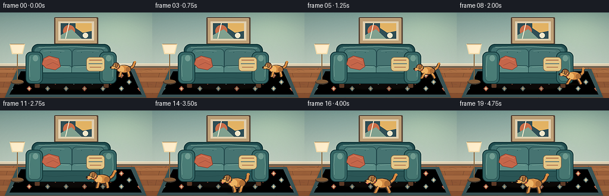
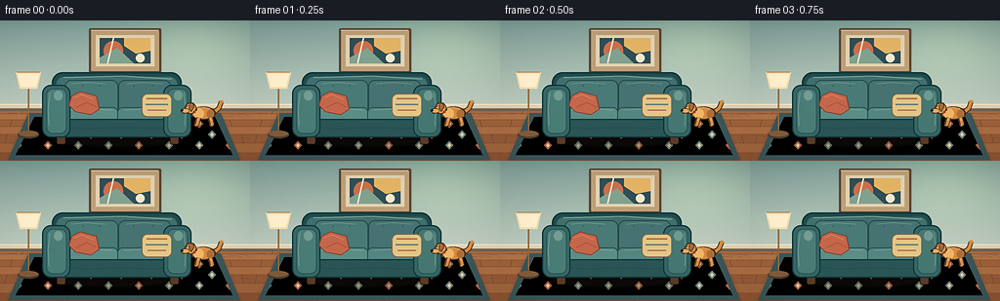

CODING AGENTS AS PIXEL WORLD MODELS
traex/DeepSeek-V4.1-Flash · dynamic_spatial_relationship_0003
点击播放 · 原生 RGB 像素
逐轮保存的候选
回放视频、检查图与代码变化。
每份候选均可单独播放。实际图片检查记录在下方工具轨迹中。
候选 01播放与检查图
点击播放 · 原生 RGB 像素

展开代码变化
--- 上一保存版本
+++ 本次保存版本
@@ -0,0 +1,435 @@
+from __future__ import annotations
+
+import math
+from pathlib import Path
+
+import numpy as np
+from PIL import Image, ImageDraw, ImageEnhance, ImageFilter
+
+import artifact_io
+
+
+ROOT = Path(__file__).resolve().parent
+W, H = 256, 144
+FRAMES = 20
+FPS = 4.0
+S = 4
+BIG_W, BIG_H = W * S, H * S
+
+
+def rgb(hex_value: str) -> tuple[int, int, int]:
+ value = hex_value.lstrip("#")
+ return tuple(int(value[i : i + 2], 16) for i in (0, 2, 4))
+
+
+def scaled_box(box):
+ return tuple(round(value * S) for value in box)
+
+
+def scaled_points(points):
+ return [(round(x * S), round(y * S)) for x, y in points]
+
+
+def line(draw, points, fill, width, joint="curve"):
+ draw.line(scaled_points(points), fill=fill, width=max(1, round(width * S)), joint=joint)
+
+
+def ellipse(draw, box, fill=None, outline=None, width=1):
+ draw.ellipse(
+ scaled_box(box),
+ fill=fill,
+ outline=outline,
+ width=max(1, round(width * S)) if outline else 0,
+ )
+
+
+def rounded(draw, box, radius, fill=None, outline=None, width=1):
+ draw.rounded_rectangle(
+ scaled_box(box),
+ radius=round(radius * S),
+ fill=fill,
+ outline=outline,
+ width=max(1, round(width * S)) if outline else 0,
+ )
+
+
+def polygon(draw, points, fill=None, outline=None, width=1):
+ draw.polygon(
+ scaled_points(points),
+ fill=fill,
+ outline=outline,
+ width=max(1, round(width * S)) if outline else 0,
+ )
+
+
+def rgba_layer(size=(BIG_W, BIG_H)):
+ return Image.new("RGBA", size, (0, 0, 0, 0))
+
+
+def paste_shadow(base, layer, blur=8, opacity=1.0):
+ if opacity != 1.0:
+ alpha = layer.getchannel("A").point(lambda value: round(value * opacity))
+ layer.putalpha(alpha)
+ base.alpha_composite(layer.filter(ImageFilter.GaussianBlur(blur)))
+
+
+def make_background() -> Image.Image:
+ yy, xx = np.mgrid[0:BIG_H, 0:BIG_W]
+ xn = xx / (BIG_W - 1)
+ yn = yy / (BIG_H - 1)
+
+ top = np.array(rgb("#789690"), dtype=np.float32)
+ bottom = np.array(rgb("#B8C4B8"), dtype=np.float32)
+ wall_t = np.clip((yn / 0.64) ** 0.78, 0, 1)[..., None]
+ wall = top * (1 - wall_t) + bottom * wall_t
+
+ # A soft, off-center daylight wash keeps the room from feeling flat.
+ glow = np.exp(-(((xn - 0.79) / 0.36) ** 2 + ((yn - 0.17) / 0.38) ** 2) * 2.0)
+ wall += glow[..., None] * np.array([21, 20, 10], dtype=np.float32)
+
+ rng = np.random.default_rng(23)
+ wall += rng.normal(0, 2.0, (BIG_H, BIG_W, 1))
+ wall = np.clip(wall, 0, 255).astype(np.uint8)
+ image = Image.fromarray(wall, "RGB").convert("RGBA")
+ draw = ImageDraw.Draw(image)
+
+ # Warm oak floor, built from broad perspective bands.
+ horizon = 91
+ bands = [91, 96, 102, 109, 117, 126, 136, 145]
+ colors = ["#9E6844", "#A87149", "#96613F", "#A36C46", "#8F5B3C", "#9A6542", "#895638"]
+ for i, (y0, y1) in enumerate(zip(bands[:-1], bands[1:])):
+ polygon(draw, [(0, y0), (256, y0), (256, y1), (0, y1)], fill=rgb(colors[i % len(colors)]))
+ line(draw, [(0, y1), (256, y1)], rgb("#5F3B2C"), 0.7)
+
+ seam_rows = [
+ (91, 96, [24, 72, 121, 170, 220]),
+ (96, 102, [47, 100, 151, 207]),
+ (102, 109, [12, 68, 124, 182, 235]),
+ (109, 117, [40, 99, 158, 216]),
+ (117, 126, [7, 66, 128, 191, 247]),
+ (126, 136, [34, 97, 161, 225]),
+ (136, 145, [0, 69, 137, 207]),
+ ]
+ for y0, y1, xs in seam_rows:
+ for x in xs:
+ line(draw, [(x, y0), (x + (x - 128) * 0.018, y1)], rgb("#68422F"), 0.55)
+
+ # Fine grain is sparse enough to survive the final downsample.
+ for i in range(34):
+ x = 8 + (i * 47) % 244
+ y = 95 + (i * 19) % 47
+ bend = 1.0 + (i % 3)
+ line(draw, [(x, y), (x + 8, y + 0.5), (x + 14, y + bend)], (111, 72, 49), 0.35)
+
+ # Baseboard and its cast shadow.
+ polygon(draw, [(0, 87.5), (256, 87.5), (256, 92.7), (0, 92.7)], fill=rgb("#6B6254"))
+ polygon(draw, [(0, 85.8), (256, 85.8), (256, 90.2), (0, 90.2)], fill=rgb("#D5C8AE"))
+ line(draw, [(0, 86.1), (256, 86.1)], rgb("#F0E4C8"), 0.8)
+ line(draw, [(0, 90.0), (256, 90.0)], rgb("#9D8C73"), 0.6)
+
+ # Geometric rug with a quiet border and warm rust accents.
+ rug_points = [(29, 95), (226, 95), (246, 143), (8, 143)]
+ rug_shadow = rgba_layer()
+ rs = ImageDraw.Draw(rug_shadow)
+ polygon(rs, [(29, 96), (226, 96), (246, 145), (8, 145)], fill=(45, 39, 35, 120))
+ paste_shadow(image, rug_shadow, blur=8, opacity=0.52)
+
+ rug = rgba_layer()
+ rd = ImageDraw.Draw(rug)
+ polygon(rd, rug_points, fill=rgb("#3E5557"))
+ polygon(rd, [(35, 99), (220, 99), (238, 138), (16, 138)], fill=rgb("#C9B38C"))
+ line(rd, scaled_points([(35, 99), (220, 99), (238, 138), (16, 138), (35, 99)]), rgb("#725A47"), 1.0)
+
+ pattern = rgba_layer()
+ pd = ImageDraw.Draw(pattern)
+ for row in range(3):
+ cy = 106 + row * 11
+ offset = 31 if row % 2 else 18
+ for col in range(8):
+ cx = offset + col * 31
+ color = "#A65F48" if (row + col) % 3 == 0 else "#6A7E79"
+ polygon(
+ pd,
+ [(cx, cy - 4.5), (cx + 4.2, cy), (cx, cy + 4.5), (cx - 4.2, cy)],
+ fill=rgb(color),
+ )
+ polygon(
+ pd,
+ [(cx, cy - 2.2), (cx + 2.0, cy), (cx, cy + 2.2), (cx - 2.0, cy)],
+ fill=rgb("#D8C59F"),
+ )
+ mask = Image.new("L", (BIG_W, BIG_H), 0)
+ ImageDraw.Draw(mask).polygon(scaled_points([(35, 99), (220, 99), (238, 138), (16, 138)]), fill=255)
+ pattern.putalpha(mask)
+ rug.alpha_composite(pattern)
+ image.alpha_composite(rug)
+
+ # Framed abstract artwork gives the room a focal plane behind the sofa.
+ art_shadow = rgba_layer()
+ ad = ImageDraw.Draw(art_shadow)
+ polygon(ad, [(93, 10), (164, 10), (164, 55), (93, 55)], fill=(30, 29, 24, 110))
+ paste_shadow(image, art_shadow, blur=7, opacity=0.6)
+
+ rounded(draw, (91, 8, 165, 54), 1.4, fill=rgb("#5A493B"))
+ rounded(draw, (93.2, 10.2, 162.8, 51.8), 0.8, fill=rgb("#B49A76"))
+ polygon(draw, [(98, 15), (158, 15), (158, 47), (98, 47)], fill=rgb("#D7C9AC"))
+ polygon(draw, [(102, 18), (154, 18), (154, 44), (102, 44)], fill=rgb("#344E55"))
+ ellipse(draw, (106, 21, 126, 41), fill=rgb("#BF6E4D"))
+ polygon(draw, [(127, 18), (154, 18), (154, 31), (139, 34), (127, 26)], fill=rgb("#D8AE67"))
+ polygon(draw, [(102, 38), (120, 28), (137, 44), (102, 44)], fill=rgb("#7F9B8C"))
+ line(draw, [(116, 18), (110, 44)], rgb("#E7DDC4"), 1.5)
+ ellipse(draw, (139, 34, 148, 43), fill=rgb("#E7DDC4"))
+ line(draw, [(93, 10), (162, 10)], rgb("#E1C99F"), 0.8)
+
+ # Slim floor lamp at the far left, kept behind the sofa.
+ ellipse(draw, (18, 113, 40, 121), fill=rgb("#4B3F33"))
+ line(draw, [(29, 68), (29, 116)], rgb("#6C5137"), 1.5)
+ line(draw, [(29, 68), (29, 116)], rgb("#B88B54"), 0.55)
+ polygon(draw, [(16, 53), (42, 53), (38, 70), (20, 70)], fill=rgb("#E7D4AB"))
+ polygon(draw, [(18, 55), (40, 55), (36.5, 68), (21.5, 68)], fill=rgb("#F4E6C7"))
+ line(draw, [(17, 53), (41, 53)], rgb("#9C764E"), 0.8)
+ ellipse(draw, (19, 113, 39, 119), fill=rgb("#7D5C3D"))
+
+ return image
+
+
+def draw_sofa(image: Image.Image) -> None:
+ shadow = rgba_layer()
+ sd = ImageDraw.Draw(shadow)
+ ellipse(sd, (48, 113, 192, 132), fill=(43, 37, 33, 160))
+ paste_shadow(image, shadow, blur=10, opacity=0.58)
+
+ draw = ImageDraw.Draw(image)
+ dark = rgb("#18383A")
+ deep = rgb("#244B4D")
+ fabric = rgb("#426D6C")
+ light = rgb("#628B84")
+
+ # Feet first so they sit behind the body.
+ rounded(draw, (58, 115, 67, 127), 2.0, fill=rgb("#5A3D2B"), outline=rgb("#31241D"), width=0.7)
+ rounded(draw, (174, 115, 183, 127), 2.0, fill=rgb("#5A3D2B"), outline=rgb("#31241D"), width=0.7)
+
+ # Main upholstered shell.
+ rounded(draw, (53, 53, 186, 113), 11, fill=deep, outline=dark, width=1.5)
+ rounded(draw, (57, 57, 182, 106), 8.5, fill=fabric, outline=rgb("#2C5252"), width=1.0)
+ line(draw, [(65, 58.5), (126, 57), (176, 60)], rgb("#769A91"), 1.2)
+
+ # Back cushions with soft highlights and seam shadows.
+ rounded(draw, (66, 61, 121, 96), 7, fill=rgb("#4B7673"), outline=rgb("#284B4D"), width=1.0)
+ rounded(draw, (121, 61, 175, 96), 7, fill=rgb("#48716F"), outline=rgb("#284B4D"), width=1.0)
+ line(draw, [(73, 65), (88, 63.5), (108, 65)], rgb("#789A91"), 0.8)
+ line(draw, [(129, 65), (146, 63.5), (166, 65)], rgb("#73958E"), 0.8)
+ line(draw, [(69, 89), (91, 91), (117, 89)], rgb("#315657"), 0.8)
+ line(draw, [(125, 89), (148, 91), (171, 89)], rgb("#315657"), 0.8)
+
+ # Seat cushions sit slightly forward of the back.
+ rounded(draw, (66, 89, 121, 111), 5.5, fill=rgb("#5C8982"), outline=rgb("#2A4F50"), width=1.0)
+ rounded(draw, (120, 89, 176, 111), 5.5, fill=rgb("#56817C"), outline=rgb("#2A4F50"), width=1.0)
+ line(draw, [(73, 92), (94, 90.5), (115, 92)], rgb("#83A79C"), 0.85)
+ line(draw, [(127, 92), (149, 90.5), (169, 92)], rgb("#7DA096"), 0.85)
+ line(draw, [(71, 106), (95, 108), (116, 106)], rgb("#3E6664"), 0.7)
+ line(draw, [(125, 106), (149, 108), (171, 106)], rgb("#3E6664"), 0.7)
+
+ # Front apron and arms.
+ rounded(draw, (53, 101, 186, 120), 6.5, fill=rgb("#2E5555"), outline=dark, width=1.3)
+ line(draw, [(59, 109), (91, 111), (123, 109.5), (157, 111), (181, 109)], rgb("#244748"), 0.65)
+ rounded(draw, (43, 66, 72, 120), 9, fill=rgb("#396463"), outline=dark, width=1.3)
+ rounded(draw, (167, 66, 196, 120), 9, fill=rgb("#396463"), outline=dark, width=1.3)
+ rounded(draw, (47.5, 70, 68, 116), 6.5, fill=rgb("#4C7974"), outline=rgb("#2A4D4D"), width=0.65)
+ rounded(draw, (171.5, 70, 192, 116), 6.5, fill=rgb("#48746F"), outline=rgb("#2A4D4D"), width=0.65)
+ line(draw, [(51, 74), (49, 91), (50, 108)], rgb("#6C948A"), 0.9)
+ line(draw, [(188, 74), (190, 91), (189, 108)], rgb("#688F86"), 0.9)
+ ellipse(draw, (55, 72, 64, 82), fill=rgb("#71978E"))
+ ellipse(draw, (178, 72, 187, 82), fill=rgb("#6E948A"))
+
+ # Rust and cream throw pillows break up the teal mass.
+ polygon(
+ draw,
+ [(73, 77), (82, 72.5), (99, 77), (102, 91), (93, 97), (77, 94), (70, 87)],
+ fill=rgb("#B9664D"),
+ outline=rgb("#744336"),
+ width=0.9,
+ )
+ line(draw, [(76, 79), (84, 76), (96, 81)], rgb("#D88A69"), 0.8)
+ line(draw, [(78, 89), (89, 84), (99, 89)], rgb("#8F4C3D"), 0.65)
+ rounded(draw, (145, 75, 176, 99), 6, fill=rgb("#D7BE86"), outline=rgb("#78674D"), width=0.9)
+ line(draw, [(150, 80), (171, 80)], rgb("#A66C4E"), 1.6)
+ line(draw, [(149, 86), (172, 86)], rgb("#647A76"), 1.6)
+ line(draw, [(151, 92), (170, 92)], rgb("#A66C4E"), 1.2)
+
+ # Small piping marks add upholstery detail without visual noise.
+ for x, y in [(85, 67), (102, 67), (137, 67), (156, 67), (80, 103), (106, 103), (141, 103), (164, 103)]:
+ ellipse(draw, (x - 0.45, y - 0.45, x + 0.45, y + 0.45), fill=rgb("#2B5152"))
+
+
+def draw_dog(image: Image.Image, cx: float, ground_y: float, scale: float, phase: float, run_amount: float) -> None:
+ """Draw a side-profile golden dog with a four-beat running gait."""
+ shadow = rgba_layer()
+ sd = ImageDraw.Draw(shadow)
+ width = 31 * scale
+ ellipse(
+ sd,
+ (cx - width / 2, ground_y - 2.3 * scale, cx + width / 2, ground_y + 2.7 * scale),
+ fill=(50, 42, 34, 128),
+ )
+ paste_shadow(image, shadow, blur=7, opacity=0.72)
+
+ layer = rgba_layer()
+ draw = ImageDraw.Draw(layer)
+
+ outline = rgb("#3F3027")
+ far_fur = rgb("#9A6337")
+ fur = rgb("#C98848")
+ fur_light = rgb("#E4AF68")
+ fur_dark = rgb("#A76D3B")
+ nose = rgb("#2B2624")
+ bob = (abs(math.sin(phase)) * 1.15 - 0.35) * run_amount * scale
+
+ def pt(x: float, y: float) -> tuple[float, float]:
+ return (cx + x * scale, ground_y + (y + bob) * scale)
+
+ def leg(anchor_x: float, anchor_y: float, swing: float, far: bool = False) -> None:
+ direction = -1 if anchor_x < 0 else 1
+ knee = (anchor_x + direction * 1.1 + swing * 3.5, anchor_y + 4.2 - abs(swing) * 0.7)
+ foot = (anchor_x + direction * 2.4 + swing * 7.0, -0.65)
+ paw = (foot[0] - 0.7, foot[1] + 0.15)
+ color_outline = rgb("#5A422F") if far else outline
+ color_fill = far_fur if far else fur
+ line(draw, [pt(anchor_x, anchor_y), pt(*knee), pt(*foot)], color_outline, 5.1 * scale)
+ line(draw, [pt(anchor_x, anchor_y), pt(*knee), pt(*foot)], color_fill, 3.35 * scale)
+ ellipse(draw, (*pt(paw[0] - 1.5, paw[1] - 0.8), *pt(paw[0] + 1.6, paw[1] + 1.1)), fill=color_outline)
+ ellipse(draw, (*pt(paw[0] - 1.25, paw[1] - 0.7), *pt(paw[0] + 1.35, paw[1] + 0.65)), fill=color_fill)
+ if not far:
+ line(draw, [pt(anchor_x + direction * 0.35, anchor_y + 1), pt(knee[0], knee[1] - 0.4)], fur_light, 0.75 * scale)
+
+ # Tail, far legs, and torso are behind the head and near legs.
+ tail_wag = math.sin(phase * 0.62 + 0.8) * 2.2
+ tail_mid = (18.0 + tail_wag * 0.4, -21.0)
+ tail_tip = (20.0 + tail_wag, -29.0 + abs(tail_wag) * 0.3)
+ line(draw, [pt(11.5, -15), pt(*tail_mid), pt(*tail_tip)], outline, 6.0 * scale)
+ line(draw, [pt(11.5, -15), pt(*tail_mid), pt(*tail_tip)], fur, 3.7 * scale)
+ ellipse(draw, (*pt(tail_tip[0] - 2.2, tail_tip[1] - 2.1), *pt(tail_tip[0] + 2.6, tail_tip[1] + 1.9)), fill=fur)
+
+ stride = math.sin(phase) * run_amount
+ leg(7.5, -10.0, -stride, far=True)
+ leg(-6.2, -10.0, stride, far=True)
+
+ # Body silhouette and chest.
+ ellipse(draw, (*pt(-14.5, -23.0), *pt(14.8, -7.0)), fill=outline)
+ ellipse(draw, (*pt(-13.0, -21.5), *pt(13.2, -8.5)), fill=fur)
+ ellipse(draw, (*pt(-11.0, -20.5), *pt(1.0, -8.5)), fill=fur_light)
+ ellipse(draw, (*pt(4.0, -19.2), *pt(13.0, -9.0)), fill=fur_dark)
+
+ # Neck and head, angled slightly toward the direction of travel.
+ polygon(draw, [pt(-7, -19), pt(-12, -27), pt(-17, -24), pt(-12, -15)], fill=outline)
+ ellipse(draw, (*pt(-22.0, -28.0), *pt(-8.0, -14.0)), fill=outline)
+ ellipse(draw, (*pt(-20.5, -26.7), *pt(-9.0, -15.1)), fill=fur)
+ ellipse(draw, (*pt(-19.3, -25.3), *pt(-11.0, -16.0)), fill=fur_light)
+
+ # Muzzle and nose.
+ ellipse(draw, (*pt(-27.0, -21.0), *pt(-16.3, -14.8)), fill=outline)
+ ellipse(draw, (*pt(-26.0, -20.2), *pt(-17.0, -15.6)), fill=rgb("#DDA45F"))
+ ellipse(draw, (*pt(-27.1, -19.7), *pt(-23.7, -17.0)), fill=nose)
+ line(draw, [pt(-24.8, -15.8), pt(-23.7, -14.9), pt(-22.0, -15.5)], nose, 0.55 * scale)
+ if run_amount > 0.3:
+ tongue = 0.8 + 0.4 * math.sin(phase * 2.0)
+ ellipse(draw, (*pt(-23.8, -15.7), *pt(-20.9, -13.6 - tongue)), fill=rgb("#D56D6C"))
+
+ # Floppy ear and eye.
+ polygon(
+ draw,
+ [pt(-17.2, -26.0), pt(-11.4, -27.5), pt(-10.8, -22.0), pt(-14.2, -16.4), pt(-17.2, -20.5)],
+ fill=outline,
+ )
+ polygon(
+ draw,
+ [pt(-16.4, -25.1), pt(-12.1, -26.2), pt(-11.7, -22.0), pt(-14.4, -17.6), pt(-16.2, -20.7)],
+ fill=rgb("#9E673C"),
+ )
+ ellipse(draw, (*pt(-20.2, -24.5), *pt(-18.7, -22.8)), fill=rgb("#24201E"))
+ ellipse(draw, (*pt(-19.9, -24.3), *pt(-19.35, -23.7)), fill=rgb("#F7E8C4"))
+
+ # Collar and near legs complete the silhouette.
+ line(draw, [pt(-12.0, -17.6), pt(-9.2, -15.7)], rgb("#9E473B"), 2.2 * scale)
+ leg(-5.2, -10.0, stride)
+ leg(8.4, -10.0, -stride)
+
+ # Warm rim light on the top of the back and head.
+ line(draw, [pt(-7.5, -21.3), pt(0.5, -22.1), pt(8.0, -20.4)], rgb("#F1C17B"), 0.75 * scale)
+ line(draw, [pt(-18.2, -25.4), pt(-13.0, -26.3)], rgb("#F3C780"), 0.65 * scale)
+
+ image.alpha_composite(layer)
+
+
+def path_position(frame: int) -> tuple[float, float, float, float, float]:
+ """Return x, ground y, scale, gait phase, and run strength."""
+ if frame <= 3:
+ idle_phase = frame * 0.95
+ return 208.0, 108.0, 0.86, idle_phase, 0.0
+ if frame >= 17:
+ end_phase = 2.0 * math.pi * 4.8 + (frame - 17) * 0.7
+ return 128.0, 139.0, 1.08, end_phase, 0.08
+
+ raw = (frame - 3) / 14.0
+ t = raw * raw * (3.0 - 2.0 * raw)
+ # Cubic Bezier from the sofa's right side into the foreground.
+ p0 = np.array([208.0, 108.0])
+ p1 = np.array([202.0, 124.0])
+ p2 = np.array([168.0, 134.0])
+ p3 = np.array([128.0, 139.0])
+ pos = (1 - t) ** 3 * p0 + 3 * (1 - t) ** 2 * t * p1 + 3 * (1 - t) * t**2 * p2 + t**3 * p3
+ scale = 0.86 + 0.22 * t
+ phase = 2.0 * math.pi * (1.15 + raw * 4.1)
+ return float(pos[0]), float(pos[1]), scale, phase, min(1.0, 0.35 + raw * 0.9)
+
+
+def finish_frame(image: Image.Image) -> np.ndarray:
+ # A gentle vignette preserves the readable center while adding depth.
+ yy, xx = np.mgrid[0:H, 0:W]
+ xn = (xx - W / 2) / (W / 2)
+ yn = (yy - H / 2) / (H / 2)
+ radius = np.sqrt(xn**2 * 0.72 + yn**2 * 0.88)
+ vignette = np.clip(1.035 - 0.115 * np.clip(radius - 0.45, 0, 1.3) ** 1.6, 0.82, 1.035)
+ array = np.asarray(image, dtype=np.float32)
+ array *= vignette[..., None]
+ image = Image.fromarray(np.clip(array, 0, 255).astype(np.uint8), "RGB")
+ image = ImageEnhance.Color(image).enhance(1.055)
+ image = ImageEnhance.Contrast(image).enhance(1.035)
+ image = image.filter(ImageFilter.UnsharpMask(radius=0.75, percent=58, threshold=2))
+ return np.asarray(image, dtype=np.uint8)
+
+
+def render() -> np.ndarray:
+ background = make_background()
+ draw_sofa(background)
+ frames = []
+ for frame in range(FRAMES):
+ canvas = background.copy()
+ x, ground_y, scale, phase, run_amount = path_position(frame)
+ draw_dog(canvas, x, ground_y, scale, phase, run_amount)
+ final = canvas.convert("RGB").resize((W, H), Image.Resampling.LANCZOS)
+ frames.append(finish_frame(final))
+ return np.stack(frames, axis=0)
+
+
+def main() -> None:
+ frames = render()
+ assert frames.shape == (FRAMES, H, W, 3), frames.shape
+ assert frames.dtype == np.uint8
+ artifact_io.save(frames, ROOT)
+
+ # A standalone animated preview is convenient for quick human review.
+ preview = [Image.fromarray(frame) for frame in frames]
+ preview[0].save(
+ ROOT / "preview.gif",
+ save_all=True,
+ append_images=preview[1:],
+ duration=round(1000 / FPS),
+ loop=0,
+ optimize=False,
+ )
+ print(f"Wrote {len(frames)} frames to {ROOT} ({W}x{H} at {FPS:g} fps)")
+
+
+if __name__ == "__main__":
+ main()
候选 02播放与检查图
点击播放 · 原生 RGB 像素


展开代码变化
--- 上一保存版本
+++ 本次保存版本
@@ -365,7 +365,7 @@
"""Return x, ground y, scale, gait phase, and run strength."""
if frame <= 3:
idle_phase = frame * 0.95
- return 208.0, 108.0, 0.86, idle_phase, 0.0
+ return 220.0, 108.0, 0.86, idle_phase, 0.0
if frame >= 17:
end_phase = 2.0 * math.pi * 4.8 + (frame - 17) * 0.7
return 128.0, 139.0, 1.08, end_phase, 0.08
@@ -373,8 +373,8 @@
raw = (frame - 3) / 14.0
t = raw * raw * (3.0 - 2.0 * raw)
# Cubic Bezier from the sofa's right side into the foreground.
- p0 = np.array([208.0, 108.0])
- p1 = np.array([202.0, 124.0])
+ p0 = np.array([220.0, 108.0])
+ p1 = np.array([213.0, 124.0])
p2 = np.array([168.0, 134.0])
p3 = np.array([128.0, 139.0])
pos = (1 - t) ** 3 * p0 + 3 * (1 - t) ** 2 * t * p1 + 3 * (1 - t) * t**2 * p2 + t**3 * p3
候选 03播放与检查图
可观测工具轨迹
实际执行的命令与返回图片。
命令 1exit 0
/bin/bash -c "pwd && rg --files -g '"'!*.mp4'"' -g '"'!*.mov'"' -g '"'!*.webm'"' | sort"
命令 2exit 0
/bin/bash -c "printf '%s\\n' '--- prompt.txt ---'; sed -n '1,240p' prompt.txt; printf '%s\\n' '--- GENERATION_RULES.md ---'; sed -n '1,260p' GENERATION_RULES.md; printf '%s\\n' '--- task_spec.json ---'; sed -n '1,260p' task_spec.json"
命令 3exit 0
/bin/bash -c "find . -maxdepth 2 -type f -printf '%p %s bytes\\n' | sort | head -200"
命令 4exit 0
/bin/bash -c "sed -n '1,260p' artifact_io.py"
命令 5exit 0
/bin/bash -c "sed -n '1,260p' player_template.html"
命令 6exit 0
/bin/bash -c "python - <<'PY'
from PIL import Image
import numpy as np
print('PIL and numpy ready', Image.__version__, np.__version__)
PY"命令 7exit 0
/bin/bash -c 'command -v ffmpeg || true; command -v chafa || true; command -v viu || true; command -v img2txt || true'
命令 8exit 0
/bin/bash -c 'python generate.py'
命令 9exit 0
/bin/bash -c "python - <<'PY'
from PIL import Image
import numpy as np
chars='@%#*+=-:. '
for fi in [0,3,6,10,14,17,19]:
im=Image.open(f'frames/{fi:02d}.png').convert('L').resize((64,32), Image.Resampling.BILINEAR)
a=np.asarray(im)
# contrast-stretched luminance
lo,hi=np.percentile(a,[3,97]); a=np.clip((a-lo)/(hi-lo+1e-6),0,1)
print(f'\\nFRAME {fi:02d}')
for row in a:
print(''.join(chars[min(len(chars)-1,int(v*(len(chars)-1)))] for v in row))
PY"命令 10exit 0
/bin/bash -c "python - <<'PY'
from pathlib import Path
from PIL import Image
import numpy as np
import json
frames=np.stack([np.asarray(Image.open(p).convert('RGB')) for p in sorted(Path('frames').glob('*.png'))])
print('shape', frames.shape, 'dtype', frames.dtype)
print('per-frame mean RGB', [(round(float(f[...,i].mean()),1) for i in range(3)) for f in frames[::5]])
diff=np.abs(frames[1:].astype(int)-frames[:-1].astype(int))
print('consecutive mean abs diff', np.round(diff.mean(axis=(1,2,3)),2).tolist())
print('changed pixels per transition', np.count_nonzero(diff.sum(axis=3)>6,axis=(1,2)).tolist())
print('artifact sizes')
for name in ['pixels.npz','inspection.png','transition_check.png','index.html','preview.gif']:
p=Path(name); print(name,p.exists(),p.stat().st_size if p.exists() else None)
PY"命令 11exit 0
/bin/bash -c "python - <<'PY'
from PIL import Image
import numpy as np
for fi in [0,3,7,11,15,17,19]:
a=np.asarray(Image.open(f'frames/{fi:02d}.png').convert('RGB')).astype(int)
# fur-ish: warm saturated oranges around #c98848/#e4af68, reject floor with color relation
r,g,b=a.transpose(2,0,1)
mask=(r>125)&(g>70)&(g<190)&(b<125)&(r-g>25)&(g-b>5)
ys,xs=np.where(mask)
print(fi, 'fur pixels',len(xs), 'bbox', (xs.min(),ys.min(),xs.max(),ys.max()) if len(xs) else None)
# dog overall changed region vs a dogless bg approximated by nearest idle? simply saturated mask
PY"命令 12exit 0
/bin/bash -c "python - <<'PY'
import generate
from PIL import Image, ImageDraw
import numpy as np
bg=generate.make_background(); generate.draw_sofa(bg)
a=np.asarray(bg.convert('RGB').resize((256,144),Image.Resampling.LANCZOS)).astype(int)
for fi in [0,3,7,11,15,17,19]:
f=np.asarray(Image.open(f'frames/{fi:02d}.png').convert('RGB')).astype(int)
d=np.abs(f-a).sum(2)
m=d>18
ys,xs=np.where(m)
print(fi, len(xs), (xs.min(),ys.min(),xs.max(),ys.max()), 'center', (round(xs.mean(),1),round(ys.mean(),1)))
PY"命令 13exit 0
/bin/bash -c "python - <<'PY'
import generate
from PIL import Image
import numpy as np
bg=generate.make_background(); generate.draw_sofa(bg)
raw=bg.convert('RGB').resize((256,144),Image.Resampling.LANCZOS)
a=generate.finish_frame(raw).astype(int)
for fi in [0,3,7,11,15,17,19]:
f=np.asarray(Image.open(f'frames/{fi:02d}.png').convert('RGB')).astype(int)
d=np.abs(f-a).sum(2)
m=d>18
ys,xs=np.where(m)
print(fi, len(xs), (xs.min(),ys.min(),xs.max(),ys.max()), 'center', (round(xs.mean(),1),round(ys.mean(),1)))
PY"命令 14exit 0
/bin/bash -c 'python generate.py'
命令 15exit 1
/bin/bash -c "python - <<'PY'
import generate
from PIL import Image
import numpy as np, json
bg=generate.make_background(); generate.draw_sofa(bg)
a=generate.finish_frame(bg.convert('RGB').resize((256,144),Image.Resampling.LANCZOS)).astype(int)
for fi in [0,3,6,10,14,17,19]:
f=np.asarray(Image.open(f'frames/{fi:02d}.png').convert('RGB')).astype(int)
m=np.abs(f-a).sum(2)>18
ys,xs=np.where(m)
print(f'{fi:02d}: bbox=({xs.min()},{ys.min()})-({xs.max()},{ys.max()}) center=({xs.mean():.1f},{ys.mean():.1f}) area={len(xs)}')
# Validate artifact tensors and metadata.
z=np.load('pixels.npz')['pixels']
assert z.shape==(144,256,20) and z.dtype==np.uint32
meta=json.loads(open('task_spec.json').read())
assert meta=={'task_type':'t2v','width':256,'height':144,'frames':20,'fps':4.0,'audio':None}
print('pixels tensor:',z.shape,z.dtype,'min/max',hex(int(z.min())),hex(int(z.max())))
PY"命令 16exit 0
/bin/bash -c "python - <<'PY'
import numpy as np, json
z=np.load('pixels.npz')['pixels']
print('shape',z.shape,'dtype',z.dtype,'C?',z.flags.c_contiguous,'F?',z.flags.f_contiguous)
print('minmax',int(z.min()),int(z.max()))
print('spec',json.loads(open('task_spec.json').read()))
print('files')
from pathlib import Path
for p in sorted(Path('.').iterdir()):
if p.is_file() and p.name not in {'generate.py'}:
print(p.name,p.stat().st_size)
PY"命令 17exit 0
/bin/bash -c "python - <<'PY'
from PIL import Image
import numpy as np
chars=' .:-=+*#%@'
for fi,box in [(0,(186,72,250,116)),(10,(150,88,220,136)),(19,(88,98,164,144))]:
im=Image.open(f'frames/{fi:02d}.png').crop(box).resize((96,64),Image.Resampling.BICUBIC).convert('L')
a=np.asarray(im)
lo,hi=np.percentile(a,[2,98]); a=np.clip((a-lo)/(hi-lo+1e-6),0,1)
print('\\nFRAME',fi)
for row in a[::2]: print(''.join(chars[min(9,int(v*9))] for v in row[::1]))
PY"命令 18exit 1
/bin/bash -c "python -m py_compile generate.py && python - <<'PY'
from pathlib import Path
from PIL import Image
import numpy as np, hashlib, json, re
files=sorted(Path('frames').glob('*.png'))
assert len(files)==20
arr=np.stack([np.asarray(Image.open(p).convert('RGB')) for p in files])
assert arr.shape==(20,144,256,3)
assert all(np.isfinite(arr)) and arr.dtype==np.uint8
p=np.load('pixels.npz')['pixels']
assert p.shape==(144,256,20)
unpacked=np.stack([(p[...,i]>>16)&255,(p[...,i]>>8)&255,p[...,i]&255],axis=-1).transpose(0,1,2)
# The packed tensor is H,W,N and must reproduce each RGB frame exactly.
assert np.array_equal(unpacked.transpose(2,0,1,3),arr)
html=Path('index.html').read_text()
assert '__DATA__' not in html and '__ID__' not in html and 'const DATA=' in html
m=re.search(r'const DATA=(\\{.*?\\}),W=',html)
data=json.loads(m.group(1))
assert (data['width'],data['height'],data['frames'],data['fps'])==(256,144,20,4.0)
assert len(data['deltas'])==19
print('validated',arr.shape,'frames;',p.shape,'packed pixels;',len(data['deltas']),'delta packets')
print('mean absolute interframe change:',round(float(np.abs(arr[1:].astype(int)-arr[:-1].astype(int)).mean()),3))
PY"命令 19exit 1
/bin/bash -c "python -m py_compile generate.py && python - <<'PY'
from pathlib import Path
from PIL import Image
import numpy as np, json, re
files=sorted(Path('frames').glob('*.png'))
assert len(files)==20
arr=np.stack([np.asarray(Image.open(p).convert('RGB')) for p in files])
assert arr.shape==(20,144,256,3) and arr.dtype==np.uint8
p=np.load('pixels.npz')['pixels']
assert p.shape==(144,256,20)
unpacked=np.stack([(p[...,i]>>16)&255,(p[...,i]>>8)&255,p[...,i]&255],axis=-1)
assert np.array_equal(unpacked.transpose(2,0,1,3),arr)
html=Path('index.html').read_text()
assert '__DATA__' not in html and '__ID__' not in html and 'const DATA=' in html
m=re.search(r'const DATA=(\\{.*?\\}),W=',html)
data=json.loads(m.group(1))
assert (data['width'],data['height'],data['frames'],data['fps'])==(256,144,20,4.0)
assert len(data['deltas'])==19
print('validated',arr.shape,'frames;',p.shape,'packed pixels;',len(data['deltas']),'delta packets')
print('mean absolute interframe change:',round(float(np.abs(arr[1:].astype(int)-arr[:-1].astype(int)).mean()),3))
PY"命令 20exit 0
/bin/bash -c "python -m py_compile generate.py && python - <<'PY'
from pathlib import Path
from PIL import Image
import numpy as np, json, re
files=sorted(Path('frames').glob('*.png'))
assert len(files)==20
arr=np.stack([np.asarray(Image.open(p).convert('RGB')) for p in files])
assert arr.shape==(20,144,256,3) and arr.dtype==np.uint8
p=np.load('pixels.npz')['pixels']
assert p.shape==(144,256,20)
unpacked=np.stack([(p>>16)&255,(p>>8)&255,p&255],axis=-1)
assert np.array_equal(unpacked,arr.transpose(1,2,0,3))
html=Path('index.html').read_text()
assert '__DATA__' not in html and '__ID__' not in html and 'const DATA=' in html
m=re.search(r'const DATA=(\\{.*?\\}),W=',html)
data=json.loads(m.group(1))
assert (data['width'],data['height'],data['frames'],data['fps'])==(256,144,20,4.0)
assert len(data['deltas'])==19
print('validated',arr.shape,'frames;',p.shape,'packed pixels;',len(data['deltas']),'delta packets')
print('mean absolute interframe change:',round(float(np.abs(arr[1:].astype(int)-arr[:-1].astype(int)).mean()),3))
PY"保存候选 3 份；完成命令 20 次；可验证图片返回 0 张。原始 API 响应与完整日志保留在本地。